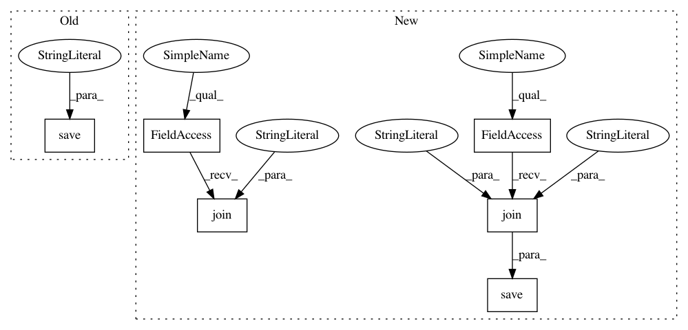

3787f54dd091832562182bb538602e976994bf32,models/create_model_weights.py,,main_mnist_binary,#,35
Before Change
np.save("W_CONV2D_MNIST_BINARY", w_0)
np.save("B_CONV2D_MNIST_BINARY", b_0)
np.save("W_DENSE_MNIST_BINARY", w_3)
np.save("B_DENSE_MNIST_BINARY", b_3)
def create_scikit_model_weights():
master_seed(1234)
After Change
w_0, b_0 = model.layers[0].get_weights()
w_3, b_3 = model.layers[3].get_weights()
np.save(os.path.join(os.path.dirname(os.path.dirname(__file__)), "resources/models/scikit/","W_CONV2D_MNIST_BINARY"), w_0)
np.save(os.path.join(os.path.dirname(os.path.dirname(__file__)), "resources/models/scikit/""B_CONV2D_MNIST_BINARY"), b_0)
np.save(os.path.join(os.path.dirname(os.path.dirname(__file__)), "resources/models/scikit/""W_DENSE_MNIST_BINARY"), w_3)
np.save(os.path.join(os.path.dirname(os.path.dirname(__file__)), "resources/models/scikit/""B_DENSE_MNIST_BINARY"), b_3)
In pattern: SUPERPATTERN
Frequency: 3
Non-data size: 6
Instances
Project Name: IBM/adversarial-robustness-toolbox
Commit Name: 3787f54dd091832562182bb538602e976994bf32
Time: 2020-02-10
Author: killian.levacher@gmail.com
File Name: models/create_model_weights.py
Class Name:
Method Name: main_mnist_binary
Project Name: IBM/adversarial-robustness-toolbox
Commit Name: 3787f54dd091832562182bb538602e976994bf32
Time: 2020-02-10
Author: killian.levacher@gmail.com
File Name: models/create_model_weights.py
Class Name:
Method Name: main_mnist_binary
Project Name: fizyr/keras-retinanet
Commit Name: 38cd320bc5d47d416b830b0656a862aff27e7252
Time: 2017-11-18
Author: yannhenon@gmail.com
File Name: examples/train_pascal.py
Class Name:
Method Name:
Project Name: fizyr/keras-retinanet
Commit Name: 38cd320bc5d47d416b830b0656a862aff27e7252
Time: 2017-11-18
Author: yannhenon@gmail.com
File Name: examples/train_coco.py
Class Name:
Method Name: